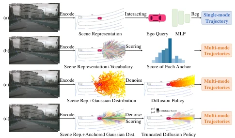
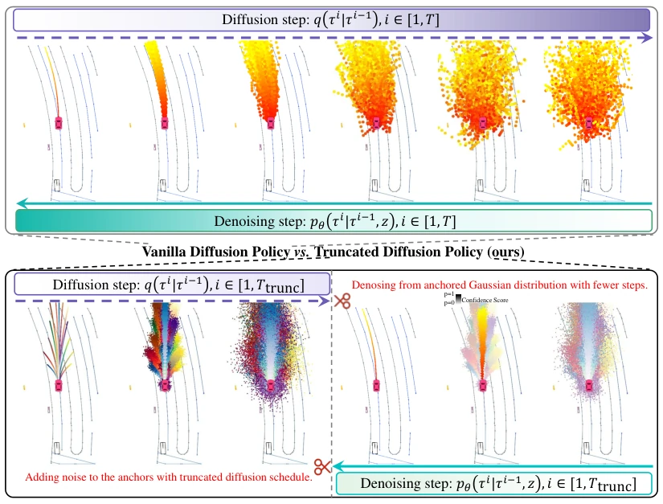
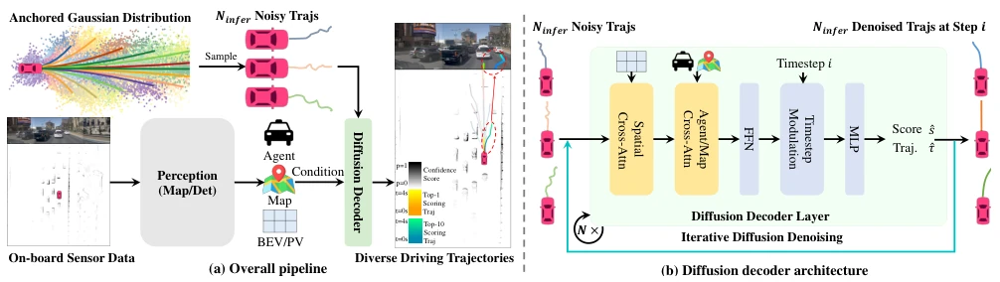

This paper forcibly integrates diffusion models into autonomous driving planning, riding the wave of current trends. Although Diffusion Policy is very popular in the robotics field, directly applying it to open-world traffic scenarios results in slow inference and susceptibility to mode collapse. The authors devised a 'Truncated Diffusion,' using prior anchors to replace pure Gaussian noise, cutting the steps down to 2, with speed skyrocketing. The results are indeed impressive, topping the NAVSIM leaderboard, but does this 'anchor' thing count as an implicit rule prior? What if the scenario exceeds the anchor distribution? However, 45 FPS is indeed attractive, faster than those relying on post-processing to boost scores like Hydra-MDP, setting an example for generative planning. What is worth pondering is that it did not pile up 8000 anchors like VADv2, but achieved better results with only 20 clustered anchors, indicating that generative models are more flexible in their reliance on priors compared to discrete sampling.
The mainstream of end-to-end autonomous driving is unimodal regression (e.g., Transfuser [7]), ignoring the uncertainty of driving behavior. VADv2 [3] attempts to solve multimodality using a fixed vocabulary, but anchor quantity is limited and computational overhead is large, and it is difficult to cover OOV scenarios. Directly applying Diffusion Policy [6] from the robotics field faces two major drawbacks: first, 20-step denoising is too slow to satisfy real-time requirements; second, in dynamic traffic scenarios, different noise samplings easily converge to similar trajectories (mode collapse). This paper aims to solve the balance problem between real-time performance and diversity in generative planning, filling the gap from robot policies to open-world driving planning.

Figure 1. The comparison of different end-to-end paradigms. (a) Single mode regression [7, 16, 20]. (b) Sampling from vocabu- lary [3, 25]. (c) Vanilla diffusion policy [6, 19]. (d) The proposed truncated diffusion policy. proach offers a scalable and robust alternative to traditional rule-based motion planning, which often struggles to gener- alize to complex real-world driving settings. To effectively learn from data, mainstream end-to-end planners (e.g., Transfuser [7], UniAD [16], VAD [20]) typ- ically regress a single-mode trajectory from an ego-query as shown in Fig. 1a. However, this paradigm does not ac- count for the inherent uncertainty and multi-mode nature of driving behaviors. Recently, VADv2 [20] introduces a large fixed vocabulary of anchor trajectories (4096 an- chors) to d
The overall process involves the perception module extracting features, input into the diffusion decoder. The core innovation is the Truncated Diffusion strategy: during training, only a small amount of Gaussian noise is added to anchor trajectories, rather than starting from pure noise; during inference, denoising occurs from the distribution near the anchors. The decoder adopts a cascaded Transformer structure, interacting with BEV/PV features through sparse deformable attention, and introducing timestep modulation. The training objective includes trajectory reconstruction and classification scores. During inference, different numbers of trajectories are dynamically sampled, selecting the highest score for output. This design retains the multimodal capability of diffusion models while significantly reducing computational load through truncation. Specifically, anchors are generated via K-Means clustering, the diffusion process is truncated to T_trunc, enabling the model to learn only the mapping from anchor noise to real trajectories, rather than from scratch.

Figure 3. Illustration of truncated diffusion policy by comparing with vanilla diffusion policy. We truncate the diffusion process and only add a small portion of Gaussian noise to diffuse the anchor trajectories. Then, we train the diffusion model to reconstruct the ground-truth trajectory from the anchored Gaussian distribution with conditional scene context. During the inference, we also truncate the denoising process by starting from the better samples in the anchored Gaussian distribution than the pure Gaussian noise.

Figure 4. Overall architecture of DiffusionDrive. (a) DiffusionDrive can integrate various existing perception modules and sensor inputs. (b) The designed diffusion decoder takes the sampled noisy trajectories from anchored Gaussian distribution as input and progressively denoises them with enhanced interactions with the conditional scene context in a cascade manner to generate the final predictions.
Tested on NAVSIM [10] and nuScenes [2]. NAVSIM adopts closed-loop evaluation, with the metric being PDMS. Compared to Transfuser [7], it improves by 4.1 PDMS, compared to VADv2 [3] improves by 7.2, and FPS increases from 7 to 45. On nuScenes, L2 error and collision rate are both superior to SparseDrive [39] and VAD [20]. Ablation experiments show that the cascaded decoder and truncation strategy are crucial for performance improvement, achieving high quality with only 2-step denoising. Furthermore, the model can generate diverse lane-change trajectories in complex scenarios, proving the effectiveness of its multimodal generation, and achieving SOTA levels without post-processing.